Suspend/Unsuspend a validator#
At a glance
This guide explains how to manually suspend or reactivate a validator, and what happens when a validator is automatically suspended by the protocol. You will need an active validator. After reading this guide, you will understand when and how to suspend your validator safely, and how to resume it when your node is back online.
A validator can be suspended in two ways:
Self-suspension: You can manually suspend your validator, for example during planned node maintenance.
Automatic suspension: The protocol may suspend your validator if it fails to produce blocks a certain number of times when selected as a round leader.
When a validator is suspended, regardless of the cause:
The validator stops earning rewards
Delegators to the validator stop earning rewards
Delegators are notified about the suspension
Self-suspension#
You can manually suspend your validator when needed, such as during node maintenance, and reactivate it when your node is operational again. This gives you control over your validator’s status without risking an automatic suspension due to inactivity. When your validator is suspended, a red banner will appear on your wallet stating that Your validation has been suspended.
To unsuspend a self-suspended validator, you can simply access your wallet, navigate to the validator section, and select “Resume” to reactivate your validation. This allows you to seamlessly return to active participation in the network once your maintenance is complete.
Automatic suspension#
Automatic suspension occurs when a validator remains inactive for an extended period, missing multiple opportunities to produce blocks. The inactivity threshold varies based on stake size; larger validators may face suspension within hours, while smaller validators might take several days to reach the threshold.
When a validator becomes inactive, it first enters a primed for suspension state. During this period, a red warning banner appears on your wallet stating that Your validation is primed for suspension.
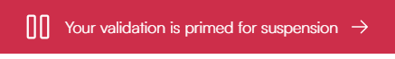
The validator then has until the next snapshot epoch to demonstrate activity by either producing a block or having its signature included in a quorum certificate. If it remains inactive, the suspension takes effect at the following payday, and the red banner will change to indicate the suspended status.
If your validator has been automatically suspended, you’ll need to follow a two-step process to resume validation. First, you must address the underlying issue with your node that caused the inactivity. Check your node’s status, identify what caused the suspension, fix these issues, and restart your node to ensure it’s properly connected to the network. Once your node is operational again, you can then proceed to your wallet and follow the resume procedure by selecting Resume in the validation section.
Self-suspend a validator#
Concordium Wallet
Tap the Earn button on the main screen.
On the validation screen, tap Suspend.
You will see a message explaining about the implications of suspending validation. Tap Continue to procced.
On the overview screen, review the information. Note that the suspension will take effect from the next payday. Swipe right on the Suspend slider to submit the validation suspension.
The wallet shows a confirmation screen with a green checkmark indicating that your validation has been successfully suspended. You can click Transaction details to view more information about the transaction, or Close to return to the main screen.
After successfully suspending your validator, you’ll notice several clear indicators throughout the wallet interface:
On your main screen, a prominent red banner appears at the top stating Your validation has been suspended. This banner serves as both a notification and a shortcut. Additionally, a red dot appears on the Earn button, providing a visual indicator that your validator requires attention.
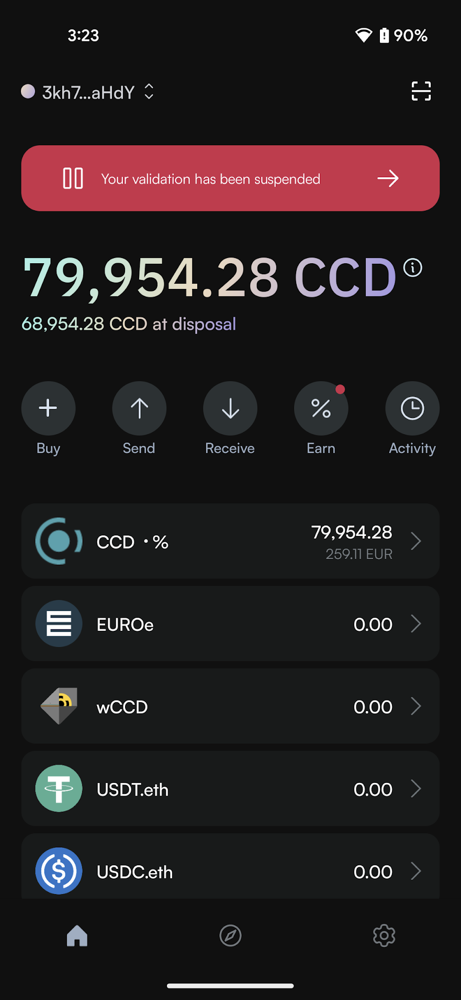
Note: If you have both a suspended validator and a suspended delegator, a banner will be shown for each.
In the account list view, suspended validators are marked with a red indicator dot to the left of the account address.
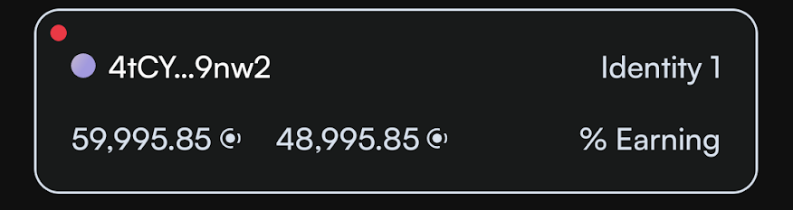
When viewing your validation status information, a warning message clearly states Your validation has been suspended along with information that your node is not currently earning rewards.
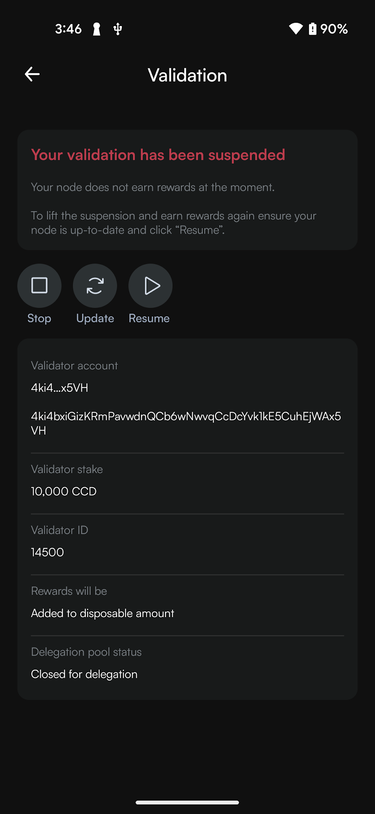
Concordium Wallet for Web
In the dropdown list, select the account for which you want to suspend the validator and click Earn.
On the next screen, click Suspend.
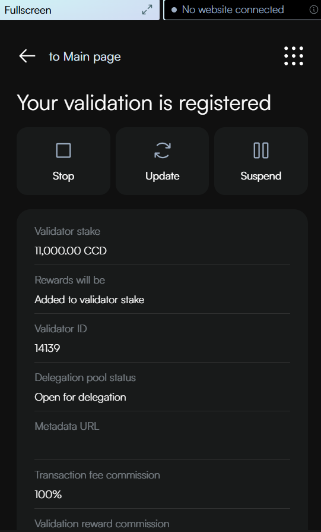
On the next screen, read the information about the consequences of suspending your validator. Click Continue to proceed with the suspension or go back if you need to reconsider.
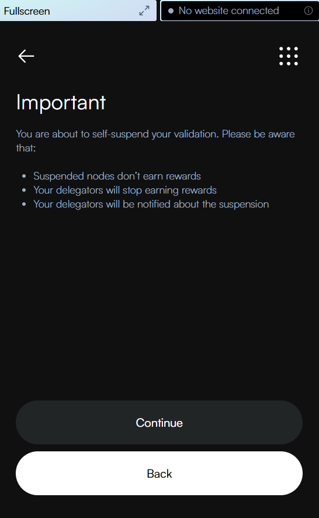
Review the transaction details for suspending your validator. Note that the suspension will take effect from the next payday. Click Send to confirm and send your suspension transaction to the blockchain.
The wallet displays a confirmation screen with a green checkmark, indicating your validation settings have been successfully updated. You can click Transaction details to view more information about the transaction, or Return to account to go back to your account overview.
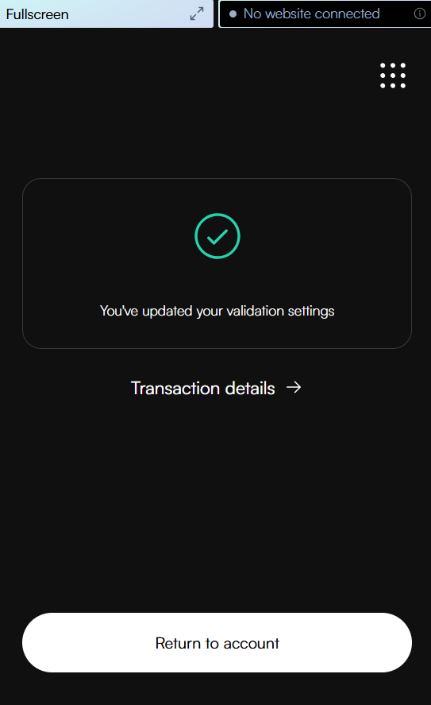
After successfully suspending your validator, you’ll notice several clear indicators throughout the wallet interface:
On your account overview screen, a prominent red banner appears at the bottom stating Your validation has been suspended. This banner serves as both a notification and a shortcut. Additionally, a red dot appears on the Earn button, providing a visual indicator that your validator requires attention.
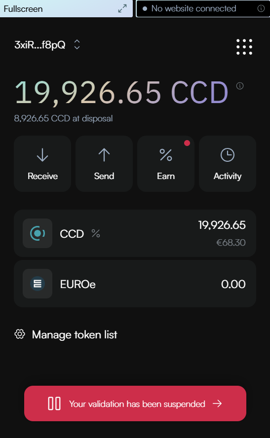
Note: If you have both a suspended validator and a suspended delegator, a banner will be shown for each.
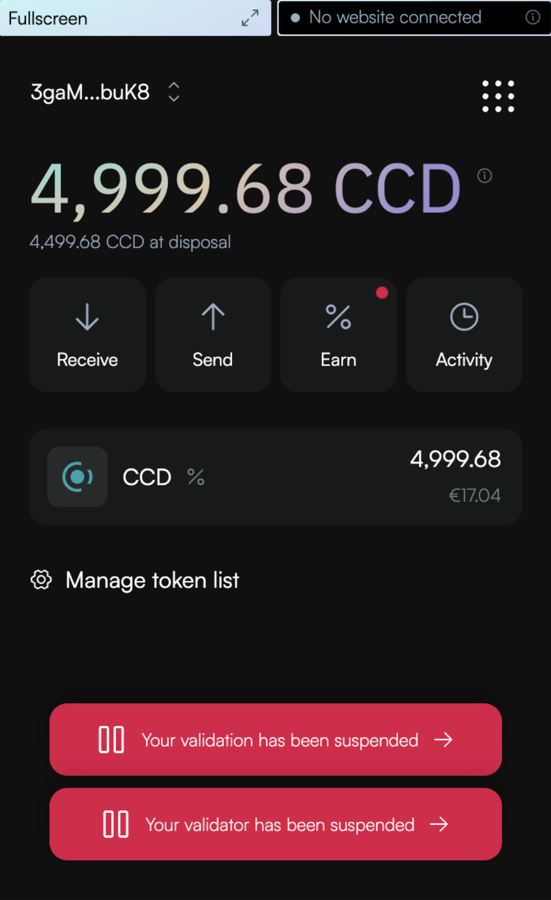
In the account list view, suspended validators are marked with a red indicator dot to the left of the account address.
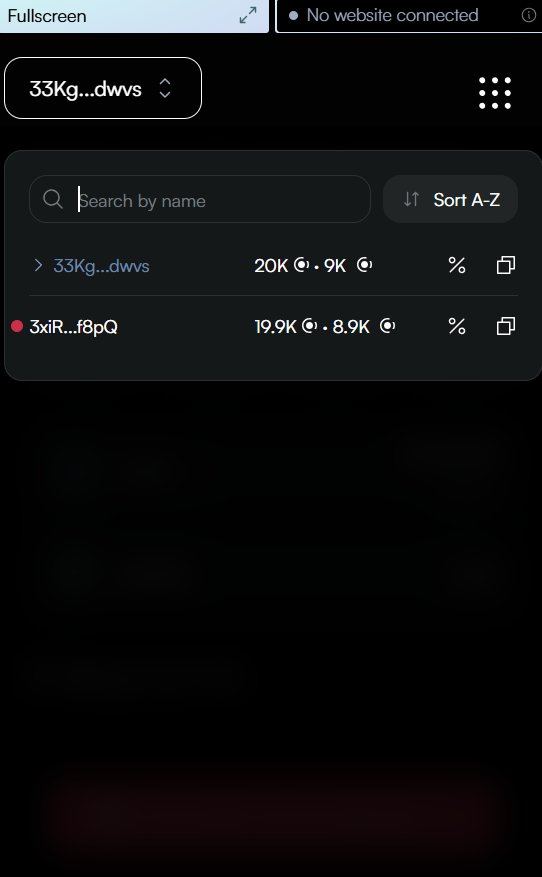
When viewing your validator details, a red message clearly states Your validation has been suspended along with information that your node is not currently earning rewards.
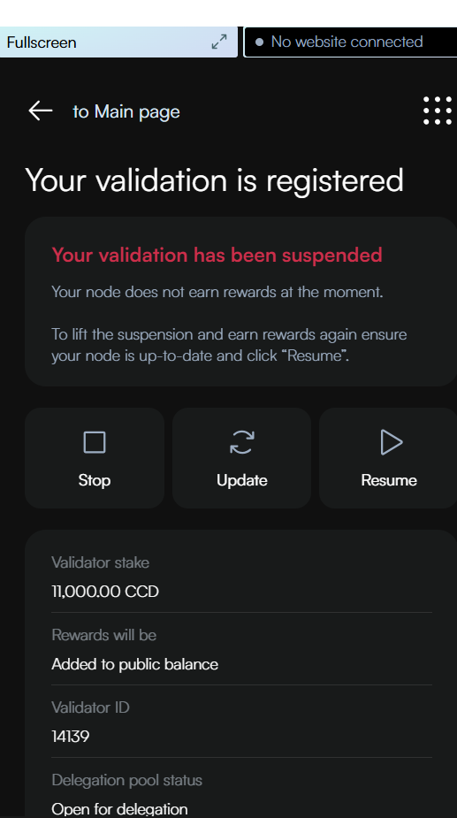
Important: The suspension notification banner on your account overview screen will remain visible across your entire wallet experience, even when you have selected different accounts in the dropdown menu. Clicking this banner will immediately take you to the suspended validator’s details page, regardless of which account is currently selected or displayed.
This persistent notification ensures you’re always aware of the suspension status and provides quick access to resume validation when you’re ready.
Desktop Wallet
Single signature account
Go to Accounts, select the account for which you want to suspend validation and click More options.
Select Validation.
Click Suspend validation.
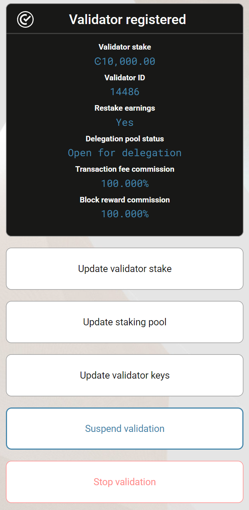
Click Continue.
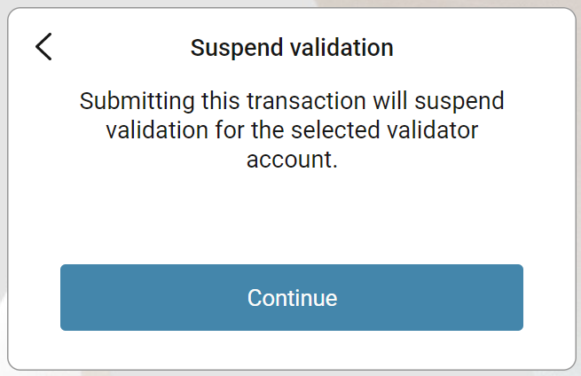
A message says Waiting for device. Please connect your Ledger. Connect the LEDGER device to the computer and enter your PIN on the LEDGER device.
Press the right button to navigate to the Concordium app, and then press both buttons to open the app. The LEDGER device says Concordium is ready. Wait for the message Ledger device is ready in the Desktop Wallet and click Submit.
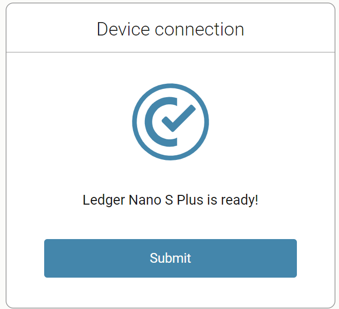
On the LEDGER device, a message says Review transaction. Verify that the sender account is correct, and navigate to the right. The LEDGER device says Suspend validator. Navigate to the right.
The LEDGER device says Sign transaction. Press both buttons to sign the transaction. The LEDGER device says Concordium is ready.
In the Desktop Wallet, you can see that the transaction has been submitted to the chain. Select Finish.
You can see that the Suspension status now has changed to Suspended.
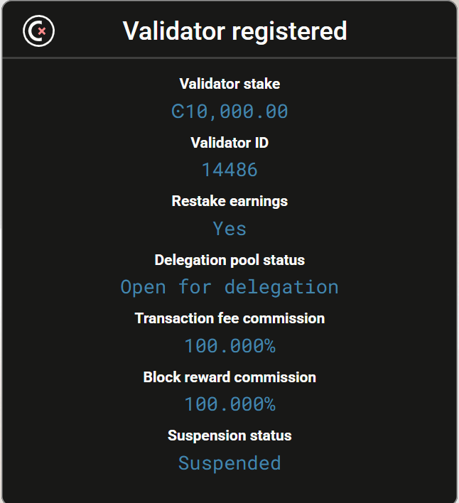
Furthermore, a banner will appear on the main page warning about the suspension.
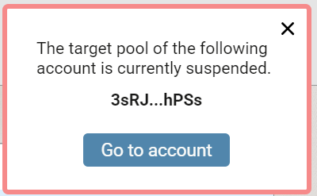
Multi signature account
Go to Multi Signature Transactions, select Make new proposal, and then select Update validator suspension.
Select the Account that you no longer want to be a validator account, and then select Continue.
Set an expiry date and time for your proposal. You must set the expiry time so that the co-signers can return their signatures in time. Select Continue.
Generate the transaction
There are two ways that you can generate the transaction:
Generate the transaction without signing. This option enables you to export the transaction proposal without signing it. You don’t need a LEDGER device but you do need an internet connection.
Generate and sign the transaction This option requires a LEDGER device and an internet connection.
In combination, these two options enable you to distribute the responsibility of creating and signing transfers among more people. You can, for example, have one person create the proposal and another one sign the proposal. It also makes it possible for you to sign the transaction on the Ledger in a different location than where the proposal was created.
Generate the transaction without signing
Verify that the Transaction details are as you intended, and then select I am sure that the proposed changes are correct.
Select Generate without signing. You can now export the proposal.
Generate and sign the transaction on the LEDGER device
If you haven’t connected the LEDGER device, there’s a message in the Desktop Wallet saying Waiting for connection until you connect the LEDGER device. Enter your PIN code on the LEDGER device. Press the buttons above the up and down arrows to choose a digit, and then press both buttons to select the digit.
Wait for the message in the Desktop Wallet saying Open the Concordium application on your Ledger device. On the LEDGER device, press the right button to navigate to the Concordium app, and then press both buttons to open the app. The LEDGER device says Concordium is ready. Wait for the message in the Desktop Wallet saying LEDGER device is ready.
In the Desktop Wallet, Verify that the Transaction details are as you intended, select I am sure that the proposed changes are correct, and then select Generate and Sign.
On the LEDGER device, there’s a message saying Review transaction. Verify that the sender account is correct, and navigate to the right. The LEDGER device says Validator status: Suspend validator. Navigate to the right.
The LEDGER device says Sign transaction. Press both buttons to sign the transaction. The LEDGER device says Concordium is ready.
Note
If you want to decline the transaction, press the right button on the LEDGER device. The hardware wallet now says Decline to sign transaction. Press both buttons to decline. In the Desktop Wallet, there’s a message saying The action was declined on the Ledger device. Please try again.
In the Desktop Wallet, you can now see Transaction details, Signatures, and Security & Submission Details, which include the status of the transaction, the identicon, and the transaction hash. If you have all the required signatures, you can submit the transaction to the chain, otherwise, you’ll have to export the proposal and receive signatures from the co-signers.
Export proposal
If more than one signature is needed to sign off on the proposal, you have to share a file of the type JSON, which contains the transaction information, with the co-signers.
In the Desktop Wallet, select Export transaction proposal.
Navigate to the location on your computer where you want to save the file. If you’re on Windows make sure that All Files is selected in Save as type. Give the file a name and the extension .json, and then click Save.
You have to export the transaction proposal and send it to the co-signer through a secure channel. Optionally, you can also send the Identicon to the co-signers through a different secure channel.
Receive signatures from co-signers
When the co-signers have signed the transaction, they return the signed transaction proposal to you, and you have to import the files into the Desktop Wallet before you can submit the transaction to the chain.
If you’re still on the same page, go to step 3. If you left the page with the account transaction, go to Multi-signature Transactions, and then select Your proposed transactions.
Select the transaction that you want to submit to the chain. You can see an overview of the transaction details and an overview of the signatures. You can also see that the status of the transaction is Unsubmitted, and you can see the identicon and the transaction hash.
Select Browse to file and then navigate to the location on your computer where you saved the signed transaction files. Select the relevant files, and then select OK. The files are uploaded to the Desktop Wallet and added to the list of signatures. Alternatively, you can drag and drop the signature files from their location on the computer and onto the Desktop Wallet.
Submit the transaction to the blockchain
When you have received and added all the required signatures, you can submit the transaction to the blockchain.
Review the transaction details carefully to ensure that all information is correct.
Select I understand this is the final submission, and that it cannot be reverted.
If you don’t want to submit the transaction to the chain, you can select Cancel. The proposal is no longer active. However, it is still visible in the list of proposals.
Select Submit transaction to chain. The transaction is submitted to the chain and finalized on the ledger.
Select Finish to leave the page.
Unsuspend a self-suspended validator#
Concordium Wallet
Navigate to the suspended validator. Tapping the suspension notification banner will immediately take you to the suspended validator’s status page.
Tap Resume.
On the overview screen, review the information. Note that the resume will take effect from the next payday. Swipe right on the Resume slider to submit the resume.
The wallet shows a confirmation screen with a green checkmark indicating that your validation has been successfully resumed. You can click Transaction details to view more information about the transaction, or Close to return to the main screen.
Concordium Wallet for Web
Navigate to the suspended validator. Clicking the suspension notification banner will immediately take you to the suspended validator’s details page.
Click Resume.
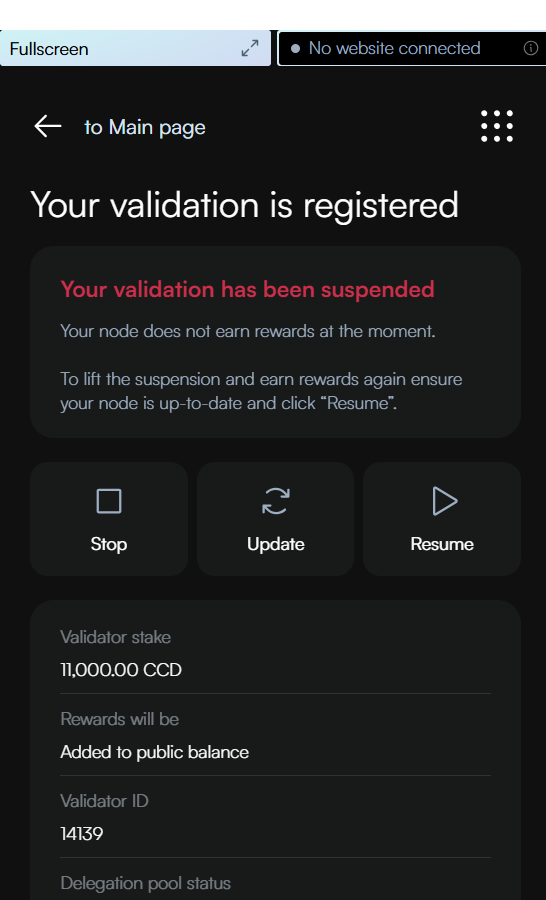
Review the transaction details for resuming your validator. Click Send to confirm and send your resume transaction to the blockchain. Note that the resumption will be effective from the next payday.
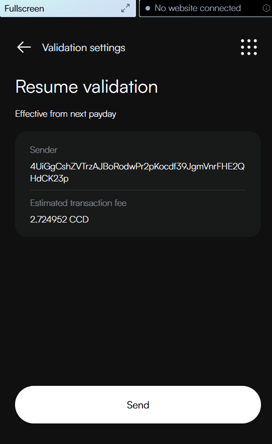
The wallet displays a confirmation screen with a green checkmark, indicating your validation has been successfully resumed. You can click Transaction details to view more information about the transaction, or Return to account to go back to your account overview.
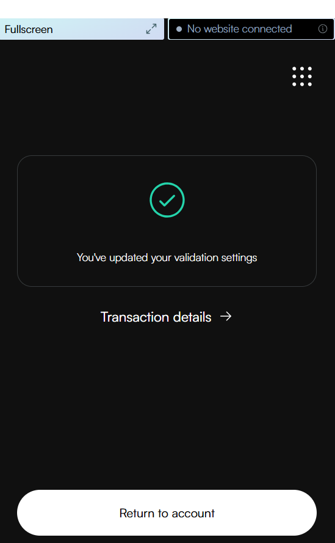
Desktop Wallet
Single signature account
Go to Accounts, select the account for which you want to resume validation and click More options. You may also click Go to account on the suspension warning.
Select Validation.
Click Resume validation.
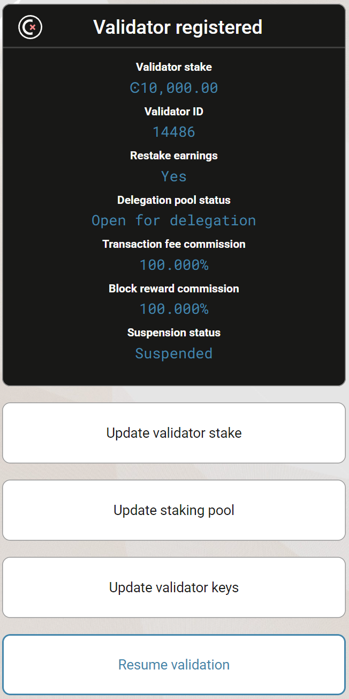
Click Continue.
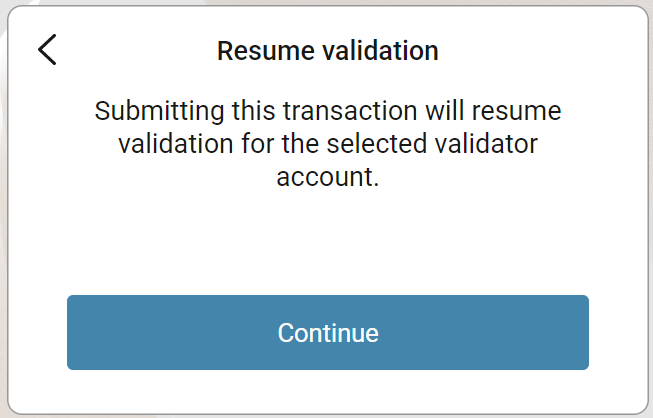
A message says Waiting for device. Please connect your Ledger. Connect the LEDGER device to the computer and enter your PIN on the LEDGER device.
Press the right button to navigate to the Concordium app, and then press both buttons to open the app. The LEDGER device says Concordium is ready. Wait for the message Ledger device is ready**in the Desktop Wallet and select **Submit.
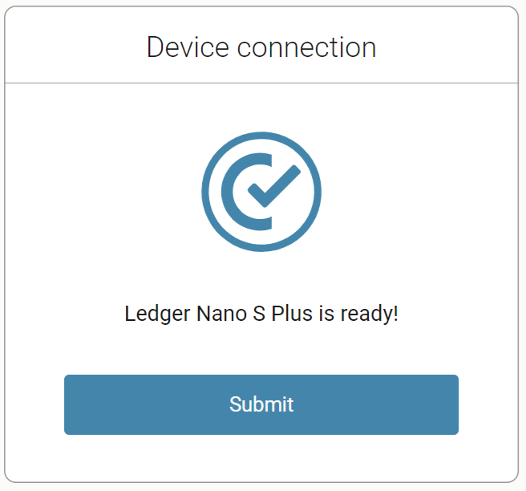
On the LEDGER device, a message says Review transaction. Verify that the sender account is correct, and navigate to the right. The LEDGER device says Resume validator. Navigate to the right.
The LEDGER device says Sign transaction. Press both buttons to sign the transaction. The LEDGER device says Concordium is ready.
In the Desktop Wallet, you can see that the transaction has been submitted to the chain. Select Finish.
Multi signature account
Go to Multi Signature Transactions, select Make new proposal, and then select Update validator suspension.
Select the Account that you no longer want to be a validator account, and then select Continue.
Set an expiry date and time for your proposal. You must set the expiry time so that the co-signers can return their signatures in time. Select Continue.
Generate the transaction
There are two ways that you can generate the transaction:
Generate the transaction without signing. This option enables you to export the transaction proposal without signing it. You don’t need a LEDGER device but you do need an internet connection.
Generate and sign the transaction This option requires a LEDGER device and an internet connection.
In combination, these two options enable you to distribute the responsibility of creating and signing transfers among more people. You can, for example, have one person create the proposal and another one sign the proposal. It also makes it possible for you to sign the transaction on the Ledger in a different location than where the proposal was created.
Generate the transaction without signing
Verify that the Transaction details are as you intended, and then select I am sure that the proposed changes are correct.
Select Generate without signing. You can now export the proposal.
Generate and sign the transaction on the LEDGER device
If you haven’t connected the LEDGER device, there’s a message in the Desktop Wallet saying Waiting for connection until you connect the LEDGER device. Enter your PIN code on the LEDGER device. Press the buttons above the up and down arrows to choose a digit, and then press both buttons to select the digit.
Wait for the message in the Desktop Wallet saying Open the Concordium application on your Ledger device. On the LEDGER device, press the right button to navigate to the Concordium app, and then press both buttons to open the app. The LEDGER device says Concordium is ready. Wait for the message in the Desktop Wallet saying LEDGER device is ready.
In the Desktop Wallet, Verify that the Transaction details are as you intended, select I am sure that the proposed changes are correct, and then select Generate and Sign.
On the LEDGER device, there’s a message saying Review transaction. Verify that the sender account is correct, and navigate to the right. The LEDGER device says Validator status: Unsuspend validator. Navigate to the right.
The LEDGER device says Sign transaction. Press both buttons to sign the transaction. The LEDGER device says Concordium is ready.
Note
If you want to decline the transaction, press the right button on the LEDGER device. The hardware wallet now says Decline to sign transaction. Press both buttons to decline. In the Desktop Wallet, there’s a message saying The action was declined on the Ledger device. Please try again.
In the Desktop Wallet, you can now see Transaction details, Signatures, and Security & Submission Details, which include the status of the transaction, the identicon, and the transaction hash. If you have all the required signatures, you can submit the transaction to the chain , otherwise, you’ll have to export the proposal and receive signatures from the co-signers.
Export proposal
If more than one signature is needed to sign off on the proposal, you have to share a file of the type JSON, which contains the transaction information, with the co-signers.
In the Desktop Wallet, select Export transaction proposal.
Navigate to the location on your computer where you want to save the file. If you’re on Windows make sure that All Files is selected in Save as type. Give the file a name and the extension .json, and then click Save.
You have to export the transaction proposal and send it to the co-signer through a secure channel. Optionally, you can also send the Identicon to the co-signers through a different secure channel.
Receive signatures from co-signers
When the co-signers have signed the transaction, they return the signed transaction proposal to you, and you have to import the files into the Desktop Wallet before you can submit the transaction to the chain.
If you’re still on the same page, go to step 3. If you left the page with the account transaction, go to Multi-signature Transactions, and then select Your proposed transactions.
Select the transaction that you want to submit to the chain. You can see an overview of the transaction details and an overview of the signatures. You can also see that the status of the transaction is Unsubmitted, and you can see the identicon and the transaction hash.
Select Browse to file and then navigate to the location on your computer where you saved the signed transaction files. Select the relevant files, and then select OK. The files are uploaded to the Desktop Wallet and added to the list of signatures. Alternatively, you can drag and drop the signature files from their location on the computer and onto the Desktop Wallet.
Submit the transaction to the blockchain
When you have received and added all the required signatures, you can submit the transaction to the blockchain.
Review the transaction details carefully to ensure that all information is correct.
Select I understand this is the final submission, and that it cannot be reverted.
If you don’t want to submit the transaction to the chain, you can select Cancel. The proposal is no longer active. However, it is still visible in the list of proposals.
Select Submit transaction to chain. The transaction is submitted to the chain and finalized on the ledger.
Select Finish to leave the page.
Unsuspend an automatically suspended validator#
Concordium Wallet
When your validator becomes inactive, it first enters a primed for suspension state. During this period, a red warning banner appears at the top of your wallet interface stating “Your validation is primed for suspension”.
Additionally, a red dot appears on the Earn button, providing a visual indicator that your validator requires attention.
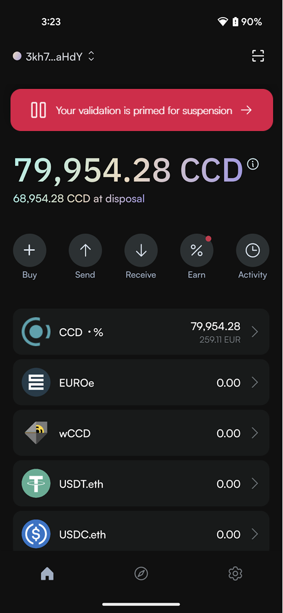
Your node has until the next snapshot epoch to show activity. If your node remains inactive, full suspension takes effect at the next payday.
If your validator has been suspended:
First check your node and resolve the underlying issues: Identify what caused the automatic suspension, fix the identified issues on your node, and restart your node.
Then, navigate to the suspended validator. Tapping the suspension notification banner will immediately take you to the suspended validator’s details page.
Tap Resume.
On the overview screen, review the information. Note that the resume will take effect from the next payday. Swipe right on the Resume slider to submit the resume.
The wallet shows a confirmation screen with a green checkmark indicating that your validation has been successfully resumed. You can click Transaction details to view more information about the transaction, or Close to return to the main screen.
Concordium Wallet for Web
When your validator becomes inactive, it first enters a primed for suspension state. During this period, a red warning banner appears at the bottom of your wallet interface stating “Your validation is primed for suspension”.
Additionally, a red dot appears on the Earn button, providing a visual indicator that your validator requires attention.
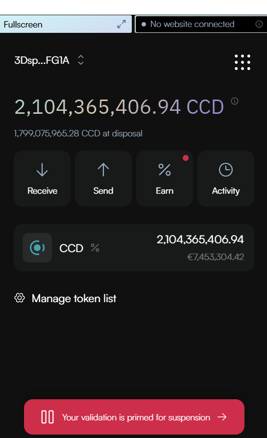
Your node has until the next snapshot epoch to show activity. If your node remains inactive, full suspension takes effect at the next payday.
If your validator has been suspended:
First check your node and resolve the underlying issues: Identify what caused the automatic suspension, fix the identified issues on your node, and restart your node.
Then, navigate to the suspended validator. Clicking the suspension notification banner will immediately take you to the suspended validator’s status page.
Click Resume.
Review the transaction details for resuming your validator. Click Send to confirm and send your resume transaction to the blockchain. Note that the resumption will be effective from the next payday.
The wallet displays a confirmation screen with a green checkmark, indicating your validation has been successfully resumed. You can click Transaction details to view more information about the transaction, or Return to account to go back to your account overview.
Desktop Wallet
When your validator becomes inactive, it first enters a primed for suspension state. During this period, a warning banner appears at the main page of your wallet interface stating The target pool of the following account is primed for suspension.
Your node has until the next snapshot epoch to show activity. If your node remains inactive, full suspension takes effect at the next payday.
If your validator has been suspended:
First check your node and resolve the underlying issues: Identify what caused the automatic suspension, fix the identified issues on your node, and restart your node.
Then, navigate to the account with the suspended validator. Clicking the suspension notification banner will immediately take you to the account.
Follow the same steps as described under Unsuspend a self-suspended validator.

{kind=link}
{kind=link}
{kind=link}
{kind=link}
{kind=link}
{kind=link}
{kind=link}
{kind=link}
{kind=link}
{kind=link}
{kind=link}
{kind=link}
{kind=link}
{kind=link}
{kind=link}
{kind=link}
{kind=link}
{kind=link}
{kind=link}
{kind=link}
{kind=link}
{kind=link}
{kind=link}
{kind=link}
{kind=link}
{kind=link}